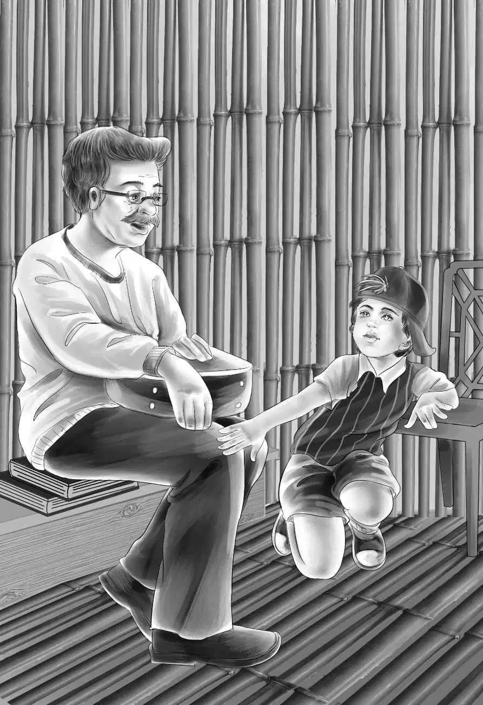

Sea Star
第二天早晨，第一个醒来的也是老米拉。她扑腾着翅膀，飞出茅屋，飞进了树丛。她吃完早餐，等着太阳升起来的工夫，便开始叫道：“起床，懒虫！”
大家都从梦中惊醒了。班尼笑道：“原来是老米拉，我还以为是有人在叫早呐！”
纳思和亨利准备开始生火做饭。“早餐能喝到咖啡，爷爷果然很开心！”亨利一边走一边说。
“我更开心！”纳思笑着说，“维莉这个小丫头实在太会体贴人啦。”
“是啊！”亨利说，“对了，关于彼得的父母，你是怎么想的？你真觉得他们还活着吗？”
“谁知道呢？”纳思说，“不过那些得救的人中，说不定就有彼得的父母。只要他们活着，你爷爷肯定会想办法找到他们的。”
“没错，爷爷肯定会有办法的！”亨利说。
他们聊得过于投入，没有看一眼海面，更没有注意到，正当他们跪在地上，准备开始生火的时候，“海星号”冒着蒸汽，已经离得越来越近了。
咖啡刚刚开始沸腾，奥登先生猛地大喊起来：“纳思！”
大家抬起头，看到奥登先生正微笑着指向海面。
“有艘轮船！”亨利大声喊道，“是‘海星号’！”
班尼和迈克飞奔过来，在沙滩上兴奋地蹦跳着，向轮船挥着手。
“隔得太远，船上的人还看不到你们呐！”亨利说。
“没关系，很快就能看到了。”纳思说，“我们要是有个大点的咖啡壶就好了，这样就可以用咖啡招待他们啦。”
杰西说：“别担心，纳思，轮船上有的是咖啡，您就只管喝吧！”
“纳思，谁会坐救生艇来接咱们？会是布朗船长么？”
“我想不会。布朗船长是不会离开轮船的，应该是二副来接咱们。”
然而这次纳思猜错了。此时，“海星号”在蓝色海湾外停了下来，船员们放下救生艇，船长和二副坐了上去，向小岛疾驶而来，众人帮着将救生艇拖上了岸。
“船长，十分感谢你能亲自过来接我们！”奥登先生说。
这时，船长看到了彼得，不由惊讶地叫道：“这是哪儿来的孩子？”
“他是‘探索者二号’上的幸存者，先生。”纳思回答道，“自从‘探索者二号’失事以后，他就一直待在这座小岛上。”
“我们要去找他的父母，”班尼说，“爷爷一定会找到的。”
“好了，班尼。”亨利打断了他的话。
“爷爷可能会找到的，”班尼换了个说法，“只要爷爷愿意，他总会有办法。”
船长看了看奥登先生，欲言又止。
奥登先生见状赶紧说道：“咱们坐下来聊吧！你们吃过早饭了吗？”
“谢谢，我们刚刚在船上吃过了，”船长说，“你们在这儿过得怎么样？”
“我们过得不知道有多好呐！”班尼说，“不过我们现在想早点回去了。”
“没错！”奥登先生说，“咱们先尽快返回旧金山，我想帮这个孩子找到他的父母。孩子们，你们也都想回家吗？”
“想！”杰西说。“我也想！”维莉附和道。
彼得什么也没说，但他的眼睛闪闪发光。
“彼得要哭了。”班尼想。
不过彼得并没哭，他只是走到奥登先生身边，伸出手。奥登先生握住了他的手。
“难道爷爷要哭了吗？”班尼想。
然而爷爷也没有哭，他只是说：“好硬的小手，坚硬得像石头！艰难的生活却使你很开心，对吗？记住，好孩子，磨难是一种财富！”
“你们什么时候可以出发，先生？”船长问。
“很快就可以啦，”班尼替爷爷回答道，“我们没有多少东西需要打包。”
“也没那么快，小家伙，”奥登先生说，“你们难道不想把迈克的龟壳锅带着吗？还有我们自己做的碟子和勺子？”
“把彼得的盘子也带着吧！”杰西说。
“还有老米拉。”彼得说。
“是啊，还有老米拉呢！”亨利说，“彼得，你能抓住她吗？”
“抓倒是能抓住，不过她不喜欢坐船，到时候还是会飞走。”
“你有什么办法，船长？”奥登先生问，“有鸟笼吗？”
“没有鸟笼，不过我有一个装螃蟹的笼子。”
奥登先生又继续说：“还有件事得麻烦你，船长，你带微型照相机了吗？”
“当然带了，我一直随身携带着呐！”
“那太好啦，让亨利跟着你去拍些照片回来吧，把瀑布、泉水、石像……”
“还有彼得的山洞！”班尼补充道。
“是的，把这些都拍下来，要拍特写哦！再去拍一张‘探索者二号’救生艇的照片——一定要把船名拍进去。”
“最后再回来拍一张茅屋和我们所有人的合影！”杰西补充道。
“合影现在就可以拍啊！”船长笑着说，“大家都站过来，靠近一点儿！”
正在这时，老米拉从树上飞了下来，彼得用手托着小鸟，大家开心地笑了，船长趁机按下了快门。
随后，亨利和船长一起去拍照，纳思则准备开始打包行李，“你们几个男孩子过来帮忙吧！”
“我虽然有点想家，”迈克大声叫道，“可是我更不想离开蓝色海湾！我不想回家了！”
“这可不行！”班尼大声叫道。他一跃而起，“爷爷，走之前还要来杯咖啡吗？”
“当然要，谢谢你，班尼。最后一杯咖啡总是最香的。迈克，到我这儿来。”
迈克来到奥登先生身边，将手放在爷爷的膝盖上，“我度过了一段非常美好的时光，奥登爷爷，真不希望就这样结束了。”
“听我说，迈克，美好的时光并没有结束——想想看，送彼得回家也是一件美好的事儿啊！我的孩子，属于你的美好时光永远不会结束。一切都要顺其自然，要相信爷爷总是你的坚强后盾。记住：学会喜爱一切，包括结束和分别！”
“我能学会的！”迈克说，“我已经喜欢上大部分东西了。”
“我知道你可以的，好孩子！”
说完，迈克便又劲头十足地忙着去打包了。“班尼，我真希望照片都能洗出来，”他说，“回家以后要是能看到那些照片，该多有意思啊！”
不多会儿，所有的东西都打包好了。亨利和船长也回来了，他们给两间茅屋也拍了张照片。
“行李都打包好了，除了老米拉。”杰西说。
于是，二副把螃蟹笼子放在沙滩上，彼得放了一颗浆果进去，米拉走进笼子，彼得顺手关上了门。

“干得漂亮！”班尼赞道。
纳思用海水把炉膛的火浇灭后，大伙儿把两艘救生艇推到水里。
“我和奥登先生坐一艘船，”船长冲迈克眨眨眼，“我俩想聊聊天。”
“好吧，”班尼说，“随便你们！我们几个也想好好聊聊！”